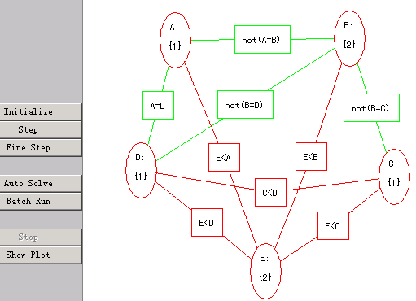
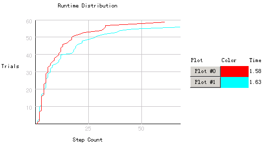

|
实验三 爬山问题实验群 一、实验目的： 熟悉和掌握启发式_爬山 搜索的特点、估价函数和算法过程理解求解流 程和搜索顺序。 二、实验原理: 爬山算法是一种局部择优算法，其特点在于对测试函数的定义上。其测试函数 不仅只回答该状态是否是目标状态，而且测试函数还能给出该状态的好坏（它 离目标状态的远近），以后生成新状态时总是按最好的方向进行。它像一个人 往山顶上爬行一样，每次前进都往高处走。。 三、实验条件： 1 . 搜索策略_爬山问题的可视化实验环境:下图是该环境运行中的一个画面.  
四、实验内容： 1 分别以各种搜索算法为例演示搜索过程。 2 分析各种算法中的OPEN表CLOSE表的生成过程。 3 分析估价函数对搜索算法的影响。 4 分析某种启发式搜索算法的特点。 五、实验步骤： 1 开始演示。进入搜索策略演示程序，可从多种不同搜索算法选择装载相关源文件。 2 选择不同的搜索算法，点击“autosearch” 观察搜索过程。 3 设置不同属性，观察搜索过程的变化。 4 观察运行过程和搜索顺序，理解启发式搜索的原理。 5 算法流程的任一时刻的相关状态,以算法流程高亮、open表、close表、节点静态图、 当前扩展节点移动图等5种形式在按钮上方同步显示,便于深入学习理解搜索算法。 6 根据程序运行过程画出搜索算法框图。 7、 若要自己设计改进算法并运行，可参考帮助文件。 六、实验结论：包括做实验的目的、方法、过程等，具体要写成实验报告，如下图所示（见下页）。 1 启发式搜索算法A*流程图和算法框图。 2 试分析估价函数的值对搜索算法速度的影响。 3 根据A*算法分析启发式搜索的特点。 附：搜索策略实验报告表:
|
|||||||||||||||||||||||||||||||||||||||||||||||||||||||||||||||||||||||||||||||||
| [导航栏特性在此站点中不可用] | |||||||||||||||||||||||||||||||||||||||||||||||||||||||||||||||||||||||||||||||||